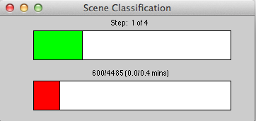
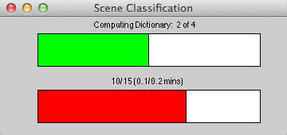
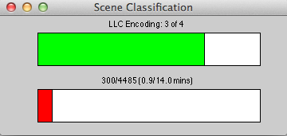

|
Table of contents
|
Classification Pipeline
We implemented the following steps in order to perform scene classification:
- Explore the given Spatial Pyramid code and generate SIFT features for all the images

- Create a random permutation of the file names in each class and pick 100 images in each class for training and use the rest of the images for testing
- Building dictionary using:
- Codebook generated by K-means clustering
- Optimized codebook by using incremental codebook optimization on the K-means codebook(Algorithm 4.1)

- Input to SVM classification:
- Implemented baseline method by exploring SpatialPyramid code: Baseline Implementation and Results
- Implemented LLC pipeline by modifying SpatialPyramid code:

- SVM for training and testing, we used two modules:
- liblinear-1.96
- libsvm-3.20
- Training SVM based on the two different pipelines:
- Baseline: Histogram intersection kernel is used for training SVM
- LLC: linear kernel is used for training SVM
- Classify the test images using the two SVM methods
- Create the corresponding confusion matrices
|